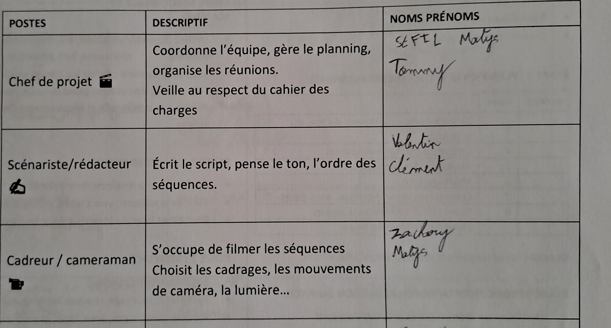
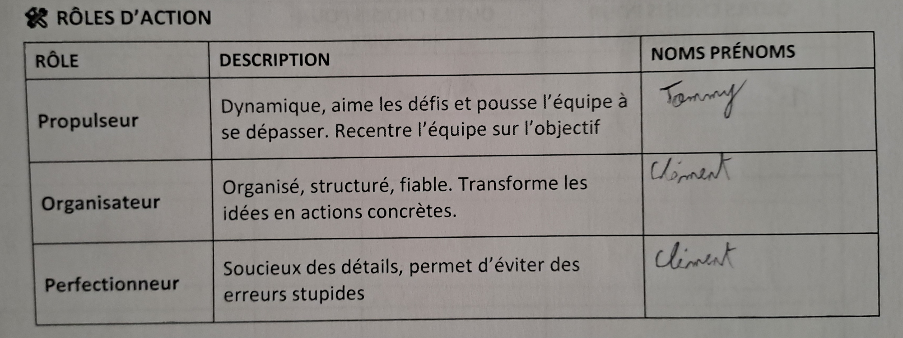
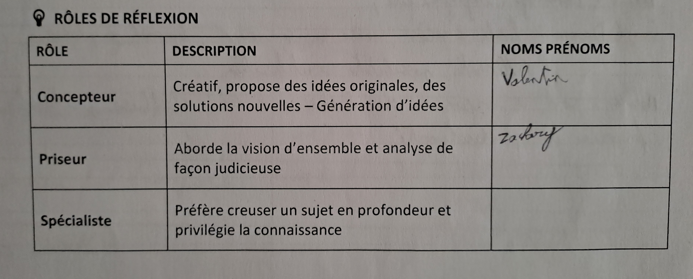
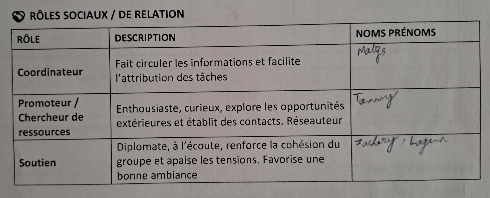

Description du projet
Objectif : créer un vidéo de présentation de l'iut lors de la journée porte ouverte.
rôles et missions
Identification et attribution des postes

Identification et attribution des roles



résultat attendu
Compétences mobilisées
- Compétence 6 : Travailler dans une équipe informatique
Tableau d'évaluation (Réussite → Échec)
| Critère | Réussite | Bien | Assez | Échec |
|---|---|---|---|---|
| Analyse du besoin | ✔️ | |||
| Organisation de l'équipe | ✔️ | |||
| Gestion du temps | ✔️ | |||
| Qualité de la vidéo | ✔️ | |||
| Communication | ✔️ | |||
| Respect des consignes | ✔️ |
III. Le bilan
- L'écoute et la communication c'est primordiale
- Le rôle dec chef d'équipe
- Mon adaptabilité
- Ma capacité à gérer une équipe par le positif
- Le niveau d'implication inégale de tous (mais je ne peu influer ceci)
- continuer a faire preuve de calme et de communication active